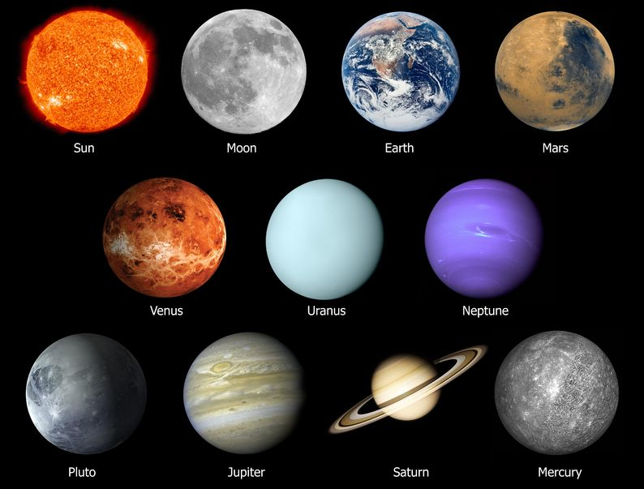

A planet is an astronomical object orbiting a star or stellar remnant that
The term planet is ancient, with ties to history, science, mythology, and religion. Several planets in the Solar System can be seen with the naked eye. These were regarded by many early cultures as divine, or as emissaries of deities. As scientific knowledge advanced, human perception of the planets changed, incorporating a number of disparate objects. In 2006, the International Astronomical Union (IAU) officially adopted a resolution defining planets within the Solar System. This definition is controversial because it excludes many objects of planetary mass based on where or what they orbit. Although eight of the planetary bodies discovered before 1950 remain "planets" under the modern definition, some celestial bodies, such as Ceres, Pallas, Juno and Vesta (each an object in the solar asteroid belt), and Pluto (the first trans-Neptunian object discovered), that were once considered planets by the scientific community, are no longer viewed as such.
